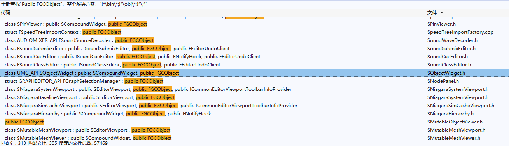

Unreal Engine C++ プログラミングドキュメント¶
序文¶
Unreal Engine はC++で記述された強力なエンジンだが、ビルドツール（UBT） と リフレクションコンパイラ（UHT） の存在により、C++標準とは異なる独自の構文を持っているため、ネットユーザーから U++ とも戏称されている。
構文だけでなく、Unreal Engineでの開発フローも通常のC++開発フローと大きく異なる。例えば、STL標準ライブラリはツールキット（Toolkit）のようなもので 開発に使用する のに対し、Unreal Engineは開発プラットフォーム（Platform）のようなもので その上で開発する という違いがある。
現在、U++のチュートリアルや書籍は多くなく、開発者にとって有用なシリーズ記事としては以下が挙げられる：
- 大象无形：虚幻引擎程序设计浅析（大象无形：Unreal Engineプログラミング入門）
- UE4開発ガイド - Gamedev Guide
- 循迹研究室 - 查利鹏（循跡研究室 - 査利鵬）
- 剖析虚幻渲染体系 - 向往（Unrealレンダリングシステムの剖析 - 向往）
- InsideUE - 大钊（InsideUE - 大釗）
Unreal Engineのドキュメントが不足し、コードが難解であることはC++初心者にとってほとんど越えられない壁となっている。これは、Unreal Engineが多くの開発者によって開発された業界規模のプロジェクトであり、コード量が膨大で迭代が速いため、その発展過程を整理・归纳することが非常に困難だからである。
筆者はいくつかのU++の動画チュートリアルを視聴したが、内容が零碎で、多くはUEの皮を被ったC++基礎チュートリアルであり、紹介される内容は限られており、多くの盲点が存在し、学習効率はあまり高くない。
良いチュートリアルを見つけた場合は、コメント欄で推奨していただければ幸いです。
Unreal Engineを使いこなすには、中大型C++プロジェクトのエンジニアリング能力が必要であり、明確に言えるのは C++初心者には適していない ということだ。
もしあなたが学生で、偶然にUnreal Engineという不思議なものを発見し、その華やかな画面効果に魅了され、心血来潮でU++開発を学びたいと思った場合は、次の点を考えるべきだ：あなたは問題解決（刷题）と論文作成以外に、以下のスキルを持っているか？
- C++のエンジニアリング構築に精通している
- エンジン内の各サブモジュールに一定の認識があり、中大型プロジェクトのソースコードを読む能力を持っている
もし持っていない場合は、筆者はあなたにもう一度落ち着いて基礎を磨くことを提案し、無理に挑戦するのではない方が良い。
基礎は長年の磨きを経てこそ堅牢になり、技術も少しずつ積み重ねてこそ一層一層高くなる。カーブを超える（弯道超车）ことを考えたり、誰かが誰々が簡単に技術をマスターしたと吹聴するのを聞いたりするのは無意味だ。実際、業界では努力しない天才は存在しない 。少なくとも筆者が尊敬する人々は例外なく努力しており、技術に強弱はなく、多くの場合 道を知る順番が先後し、術業に専門がある だけである。
筆者自身の経験を例に挙げると、3年前にU++を学んだことがある。当時は公式ドキュメントを一通り読み、次のチュートリアルに沿ってコードを書いた：
しかし、学んだ後も迷迷糊糊で、多くのコードが莫名其妙で、知識の死角が多すぎたため、一旦放棄した。それよりも自分が見える触れることのできるものを学ぶ方が良いと思い、Qt、CMake、OpenGL、いくつかのグラフィックス知識とデジタル信号処理のことを学び、次のプロジェクトを作成した：
これらのスキルを熟练に掌握した後、再びUnreal Engineを見返すと、多くのことが明らかになった：
UBT（Unreal Build Tool） を見た時、哦、原来它はCMakeと同じようにエンジニアリング構築を管理するもので、以下の操作を行うことができる：
- ビルドターゲットに 依存ライブラリ（Library） 、 インクルードディレクトリ（Include Directories） 、 マクロ定義（Definitions） を追加する
- コンパイラの設定を行う
- ビルドスクリプトを実行する
UHT（Unreal Header Tool） を見た時、QtのMoc（Meta Object Compiler）を思い出した。その作業フローはコードのヘッダーファイルをスキャンして情報を取得し、新しいコードファイルを生成してビルドターゲットに追加するもので、UEのコードリフレクションを実現するために使用される。リフレクションにより、タイプベースのコントロール、オブジェクトベースのパネルを実現でき、リフレクションデータを自ら組織することで、ブループリントのような可視化プログラミングスクリプトを実現できる。
Slate に出会った時、ドキュメントを見なくても以下のことが推測できた：
- FSlateApplication はグローバルシングルトンで、すべてのUIのスケジューリングセンターである。アプリケーション全体の状態を取得・設定し、有用な操作を提供する。
- SWindow はトップレベルウィンドウで、クロスプラットフォームのウィンドウインスタンス（FGenericWindow）を保持し、ウィンドウ関連の設定と操作を提供する。
- SWidget はウィンドウ領域を分割し、自身の領域内のインタラクションと描画イベントを処理する。最初に思い浮かぶのは、設定可能なプロパティ、オーバーライド可能なイベント虚関数、PaintEventの処理方法を調べることだ。
さらに、いくつかの基礎的なGUI概念をマッピングすると：
- ウィンドウの基本状態 ：アクティブ（Active）、フォーカス（Focus）、可視（Visible）、モーダル（Modal）、変換（Transform）
- レイアウト戦略及び関連概念 ：
- ボックスレイアウト（HBox、VBox）、フローレイアウト（Flow）、グリッドレイアウト（Grid）、アンカーレイアウト（Anchors）、オーバーラップレイアウト（Overlap）、キャンバス（Canvas）
- マージン（Margin）、パディング（Padding）、スペーシング（Spacing）、アライメント（Alignment）
- スタイル管理 ：アイコン（Icon）、スタイル（Style）、ブラシ（Brush）
- フォント管理 ：フォントファミリー（Font Family）、テキスト幅測定（Font Measure）
- サイズ計算 ：コントロールサイズの計算戦略
- インタラクションイベント ：マウス、キーボード、ドラッグ、フォーカスイベント、イベント処理メカニズム、マウスキャプチャ
- 描画イベント ：描画要素、領域クリッピング
- 基本コントロール ：ラベル（Label）、ボタン（Button）、チェックボックス（Check）、コンボボックス（Combo）、スライダー（Slider）、スクロールバー（Scroll Bar）、テキストボックス（Text）、ダイアログ（Dialog）、カラーピッカー（Color）、メニューバー（Menu Bar）、メニュー（Menu）、ステータスバー（Status Bar）、スクロールパネル（Scroll）、スタック（切り替え）パネル（Stack/Switcher）、リストパネル（List）、ツリーパネル（Tree）、ドッキングウィンドウ（Dock）、...
- 国際化 ：テキストのローカライズ翻訳（Localization）
Ok、Slateを使って自分が想像できるどんなインターフェース効果も実現できることがわかった。
RHI（Rendering Hardware Interface） を見た時、OpenGL/Vulkanのどの操作に対応するかを聯想でき、カスタム拡張を行う場合は単に猫を真似て虎を描く（照猫画虎）だけで良い。
Niagara に出会った時、GPUパーティクルはCompute Pipelineを通じてインタラクションチェーン上でパーティクルの運動をシミュレートし、原子操作と間接レンダリングを利用してパーティクルの回収を行い、最終的にパーティクルデータをインスタンス化データとしてパーティクルレンダラーのパラメータにバインドすることでパーティクルエフェクトをレンダリングすることを知っている。NiagaraのModuleはCompute Shaderのコードとパイプラインリソースを組織するだけであり、パーティクルシステムの実現原理を知っているため、Niagaraのフローと性能に非常に敏感になる。
World 、 Actor 、 Component 、 Controller ...を見た時、Gameplayアーキテクチャがこれらの多くの構造を使ってコードの責任を分割できることに恍然大悟し、自分の半人前のレベルよりはるかに良いことに気づいた。
このように、いくつかのドキュメントやチュートリアルに従って流されるのを放棄した後、むしろ汎用フレームワーク上に構築された知識体系が、Unreal Engineを再び审视する時に「異常な」思考次元を与えてくれた —— エンジンには何が含まれるべきか？哦、Unreal Engineにも含まれており、非常に良く作られている。
したがって、もしあなたが中大型C++のエンジニアリング能力を持っていない場合は、Qtやオープンソースの軽量級で基礎ドキュメントが充実したエンジンを学ぶことを提案する。もし自分で構築できるようになれば、さらに良い。
紮実な基礎知識体系を構築した後、後の学習の重点は主に 思路 になる。
本文は基礎開発の主幹ルートを阐述することを目的とし、単なる開発者ドキュメントであり、チュートリアルではない。
エンジニアリング構造¶
標準的なUEプロジェクトのファイル構造は以下の通り：
{kind=link}
Config：プロジェクト内の各種設定ファイル（GameConfig、EngineConfig、EditorConfig、PluginConfig...）を格納Content：プロジェクトのリソースファイルを格納Saved：一時保存ディレクトリ。プロジェクト開発中に生成されたファイル（ログ、クラッシュ記録、ベイク、ローカルエディタ設定など）がここに格納されるSource：プロジェクトのソースコードファイルを格納MyProj.uproject：プロジェクトエンジニアリングファイル
uproject¶
*.uproject はエンジニアリングの基本情報を格納し、初期構造は以下の通り：
{
"FileVersion": 3,
"EngineAssociation": "5.2",
"Category": "",
"Description": "",
"Modules": [
{
"Name": "MyProj",
"Type": "Runtime",
"LoadingPhase": "Default"
}
],
"Plugins": [
{
"Name": "ModelingToolsEditorMode",
"Enabled": true,
"TargetAllowList": [
"Editor"
]
}
]
}
このファイルのキーパラメータは以下の通り：
EngineAssociation：エンジンのバージョンModules：プロジェクトが持つコードモジュールPlugins：プロジェクトで有効にされた ビルトイン プラグイン
これらのパラメータは手動で変更できるが、ほとんどの場合、UEエディタ上で変更する方が安全で便利である。
エンジンバージョンの切り替え¶
*.uproject を右クリックしたメニューから、現在のプロジェクトのエンジンバージョンを切り替えることができる：
{kind=link}
{kind=link}
エンジンが選択ボックスのドロップダウンリストに表示されない場合は、以下のディレクトリで UnrealVersionSelector-Win64-Shipping.exe を使用して登録する必要がある：
{kind=link}
ビルトインプラグインの有効化¶
エンジン内でビルトインプラグインを有効にすると、エディタは自動的に*.uproject ファイルのPlugins下に新しいプラグインエントリを追加する：
{kind=link}
プロジェクトモジュールの追加¶
モジュール（Modules） は Unreal Engine（UE） のソフトウェアアーキテクチャの基礎的な構成要素である。それらは、統合されたプログラミングツール、ランタイム機能、ライブラリまたはその他の機能を独立したコードユニットにカプセル化する。
モジュール化プログラミングを使用すると以下の利点が得られる：
- モジュールは良好なコード分離を強制し、機能をカプセル化しコードの内部成分を隠すために使用できる。
- モジュールは個別のコンパイル単位としてコンパイルされる。これは、変更されたモジュールだけがコンパイルされる必要があることを意味し、大きなプロジェクトのコンパイル時間が大幅に短縮される。
- モジュールは依存関係グラフでリンクされ、実際に使用されるコードパッケージだけがヘッダーファイルを含むことを許可し、Include What You Use (IWYU)標準に準拠する。これは、プロジェクトで使用されていないモジュールが安全に編集から除外されることを意味する。
- 実行時の任意のタイミングでモジュールのロードとアンロードを制御できる。これにより、どのシステムが利用可能でアクティブであるかを管理し、プロジェクトの性能を最適化できる。
- 特定の条件（例えば、プロジェクトがどのプラットフォーム向けに作成されているか）に基づいて、プロジェクトにモジュールを含めたり除外したりできる。
すべてのプロジェクトとプラグインはデフォルトで自分自身の メインモジュール を持つ。
UEエディタ主面板のツール（Tools）- デバッグ（Debug） - モジュール（Modules）から、現在のプロジェクトで有効にされているすべてのモジュールを確認できる：
{kind=link}
モジュールの作成については以下を参照：
- Unreal Engineモジュール：https://docs.unrealengine.com/5.2/zh-CN/unreal-engine-modules/
- Gameplayモジュールの作成：https://docs.unrealengine.com/5.2/zh-CN/how-to-make-a-gameplay-module-in-unreal-engine/
ドキュメントを読む以外に、C++プロジェクト構築のいくつかの基礎概念を理解する必要がある：
*.Build.csはUEモジュールのビルドファイルで、モジュールのビルドルール（インクルードパス、依存ライブラリ、コンパイルオプションなど）を定義する。（CMakeのCMakeLists.txtに類似）
基本的な*.Build.cs の構造は以下の通り：
using UnrealBuildTool;
using System.IO; // for Path
public class ModuleName : ModuleRules
{
public ModuleName(ReadOnlyTargetRules Target) : base(Target)
{
PCHUsage = ModuleRules.PCHUsageMode.UseExplicitOrSharedPCHs;
PublicIncludePaths.AddRange(
new string[] {
// ... ここに必要なパブリックインクルードパスを追加 ...
}
);
PrivateIncludePaths.AddRange(
new string[] {
// ... ここに必要なプライベートインクルードパスを追加 ...
}
);
PublicDependencyModuleNames.AddRange(
new string[]
{
"Core",
"CoreUObject",
"Engine",
// ... ここに静的にリンクする他のパブリック依存モジュールを追加 ...
}
);
PrivateDependencyModuleNames.AddRange(
new string[]
{
// ... ここに静的にリンクする他のプライベート依存モジュールを追加 ...
}
);
}
}
- UEのビルドツール（UBT）は
*.Build.csに基づいてプロジェクトの エンジニアリングファイル （VSプロジェクトの*.slnファイル）を生成する。したがって、*.Build.csの内容やモジュールのコードファイル構造を変更した場合は、UBTを使用してエンジニアリングファイルを再生成する必要があり、これによりIDEが変更されたコードと依存関係を分析できる。 - インクルードパスと依存ライブラリはC++プロジェクト構築の基本概念である。
- インクルードパスはヘッダーファイル定義の検索パスを増やすために使用される。
- 依存ライブラリは現在のモジュールに 外部モジュールの実装をリンク（Link） するために使用される。
仮にプロジェクトにD:/Unreal Projects/MyProj/Source/MyProj/MyHeader.hというC++ヘッダーファイルが存在する場合、その中のコード定義を使用するには直接以下のように記述できる：
もし*.Build.cs のIncludePathsに"D:/Unreal Projects/MyProj/Source/MyProj"を追加した場合は、以下のように置き換えることができる：
現在のモジュールで他のモジュールのコードを使用したい場合は、*.Build.cs のDependencyModuleNamesに目標モジュールを追加するだけで良い。
このステップを行わないと、コンパイル時にリンクエラー（Link Error）が発生する。この場合は、使用している構造のコードファイルを見つけ、IDEを通じてそのファイルがどの
*.Build.csに属するかを確認し、そのモジュール名をDependencyModuleNamesに追加することで問題を解決できる。
PublicとPrivateの違い¶
簡単に言えば、Publicは伝達可能を意味し、Privateは自身だけが使用することを意味する。
A、B、Cの3つのモジュールが存在し、そのコードファイル構造が以下の通りであると仮定する：
- フォルダA
- A.Build.cs
- Publicフォルダ
- a.h
- Privateフォルダ
- A.h
- フォルダB
- B.Build.cs
- Publicフォルダ
- b.h
-
Privateフォルダ
- B.h
-
フォルダC
- C.Build.cs
- Publicフォルダ
- c.h
- Privateフォルダ
- C.h
*.Build.cs の疑似コードは以下の通り：
public class A(ReadOnlyTargetRules Target) : base(Target){
}
public class B(ReadOnlyTargetRules Target) : base(Target){
PrivateDependencyModuleNames.AddRange( new string[] { "A"});
}
public class C(ReadOnlyTargetRules Target) : base(Target){
PublicDependencyModuleNames.AddRange( new string[] { "B"});
}
c.h でモジュールAとBのファイルを使用した場合、以下の結果になる：
#include "C.h"
//【コンパイルエラー0】,PrivateフォルダはモジュールCの検索パスではない。
#include "b.h"
//コンパイル正常。UEはモジュール自身のPublicディレクトリを自動的にBuild.csのPublicIncludePathsに追加し、モジュールCのパブリック依存にモジュールBが追加されているため、モジュールBのPublicIncludePathsもモジュールCに伝達される。したがって、モジュールC中でBのPublicディレクトリに正常にアクセスできる。
#include "B.h"
//【コンパイルエラー1】，モジュールCはモジュールBのPrivateディレクトリにアクセスできない。
#include "A.h"
//【コンパイルエラー2】，モジュールCのパブリック依存にモジュールBが追加されているが、モジュールBはプライベート依存にモジュールAを追加しているため、BはAのPublic内容を正常に使用できるが、CはAを使用できない。
#include "a.h"
//【コンパイルエラー3】，モジュールCはモジュールAの任何内容にアクセスできない。
上記のエラーを解消するには、*.Build.cs の構造を以下のように変更する：
public class A(ReadOnlyTargetRules Target) : base(Target){
PublicIncludePaths.AddRange( new string[] { "Private"}); //【コンパイルエラー3】を修復。モジュールAのPrivateフォルダをパブリックインクルードパスに追加。
}
public class B(ReadOnlyTargetRules Target) : base(Target){
PublicDependencyModuleNames.AddRange( new string[] { "A"}); //【コンパイルエラー2、3】を修復。モジュールAをモジュールBのパブリック依存として追加（伝達可能な依存を意味する）。
PublicIncludePaths.AddRange( new string[] { "Private"}); //【コンパイルエラー1】を修復。モジュールBのPrivateフォルダをパブリックインクルードパスに追加。
}
public class C(ReadOnlyTargetRules Target) : base(Target){
PublicDependencyModuleNames.AddRange( new string[] { "B"});
PublicIncludePaths.AddRange( new string[] { "Private"}); //【コンパイルエラー0】を修復。モジュールCのPrivateフォルダをパブリックインクルードパスに追加。
}
上記の例を見れば、PublicとPrivateの違いを理解するのは難しくない：
- Public は伝達可能を意味する
- Private は現在のモジュールだけが使用することを意味する
読者は「直接Publicを統一的に使用すれば多くの操作を省けるのに、なぜ全てをPublicにしないのか？」と疑問に思うかもしれない。それは問題を引き起こすからである：
- 定義衝突：導入したモジュールに重複した定義（クラス、関数、グローバル変数）が存在する場合、コンパイルエラーが発生する。
- コンパイル速度低下：モジュールBがモジュールAを導入している場合、モジュールAのコードが変更されるとモジュールBの再コンパイルもトリガーされる。したがって、不必要な依存が多いとコンパイル速度が大幅に低下する。例えば
#include "CoreMinimal.h"も同様の問題を引き起こす。
モジュールがコンパイル衝突のリスクやコンパイル速度低下の問題を引き起こさないようにするため、モジュールを記述する際は可能な限りPrivateを使用し、モジュールを外部に伝達する必要がある場合にのみPublicを考慮するべきである。
オブジェクトシステム¶
Unreal Engineのロジック主体はオブジェクト指向の設計パラダイムを採用しており、すべての クラス（Class） が統一的な管理方式を持つようにするため、他のオブジェクト指向フレームワークと同様に独自の基底クラス —— UObject を提供している。
構造¶
その構造階層は以下の通り：
{kind=link}
主に3つの階層構造で構成され、各階層は異なる責任を持つ：
- UObjectBase ：データ層。UObjectのすべての基礎データを定義する。主に以下を含む：
- ObjectFlags ：Objectの各種标识
- InternalIndex ：UE中のすべてのObjectのポインタは配列に格納され、ここにindexを記録することで配列内での快速定位に便利で、主にGCに使用される。
- ClassPrivate ：Objectのメタタイプ — UClass。このクラスのリフレクションデータを格納する。
- NamePrivate ：Objectの名称
- OuterPrivate ：このObjectを持有するオブジェクト（シリアル化と関連し、 ライフサイクルとは無関係 ）
- UObjectBaseUtility ：データインターフェース層。データ層の処理インターフェースを多数提供する。
{kind=link}
- UObject ：機能層。オブジェクトシステムの基本関数インターフェースを多数提供する。
UObjectBase のコンストラクタには以下のコードが存在する：
UObjectBase::UObjectBase(UClass* InClass, EObjectFlags InFlags, EInternalObjectFlags InInternalFlags, UObject *InOuter, FName InName)
: ObjectFlags (InFlags)
, InternalIndex (INDEX_NONE)
, ClassPrivate (InClass)
, OuterPrivate (InOuter)
{
check(ClassPrivate);
// Add to global table.
AddObject(InName, InInternalFlags);
}
この中のAddObjectは、新しく作成されたUObjectのアドレスをグローバル変数 GUObjectArray に格納する。これはRuntime\CoreUObject\Private\UObject\UObjectHash.cppに位置する：
FUObjectArray の定義はRuntime\CoreUObject\Public\UObject\UObjectArray.hに位置し、内部で主にすべてのObject、クラスタ、GCを管理する。その主要なデータメンバは以下の通り：
class FUObjectArray{
//typedef TStaticIndirectArrayThreadSafeRead<UObjectBase, 8 * 1024 * 1024 /* Max 8M UObjects */, 16384 /* allocated in 64K/128K chunks */ > TUObjectArray;
typedef FChunkedFixedUObjectArray TUObjectArray;
// note these variables are left with the Obj prefix so they can be related to the historical GObj versions
/** GCの対象となるオブジェクト配列の最初のインデックス。 */
int32 ObjFirstGCIndex;
/** GCの対象外となる範囲で最後に作成されたオブジェクトを指すインデックス。 */
int32 ObjLastNonGCIndex;
/** GCの対象外プール内の最大オブジェクト数 */
int32 MaxObjectsNotConsideredByGC;
/** 初期ロード中であり、GCの対象外範囲にオブジェクトをロードする必要がある場合はtrue。 */
bool OpenForDisregardForGC;
/** すべての生存中のオブジェクトの配列。 */
TUObjectArray ObjObjects;
/** すべての生存中のオブジェクトの同期オブジェクト。 */
mutable FCriticalSection ObjObjectsCritical;
/** 使用可能なオブジェクトインデックス。 */
TArray<int32> ObjAvailableList;
/**
* UObjectBaseが作成されたときに通知するオブジェクトの配列
*/
TArray<FUObjectCreateListener* > UObjectCreateListeners;
/**
* UObjectBaseが破棄されたときに通知するオブジェクトの配列
*/
TArray<FUObjectDeleteListener* > UObjectDeleteListeners;
};
もう一つの重要な構造は FUObjectHashTables で、シングルトンクラスであり、快速検索に使用する多数のマッピングを格納する。そのコード構造は以下の通り：
struct FHashBucket{
void *ElementsOrSetPtr[2]; //UObjectBase* または TSet<UObjectBase*>* の可能性がある
};
template <typename T>
class TBucketMap : private TMap<T, FHashBucket>{
//...
};
class FUObjectHashTables
{
/** スレッドロック */
FCriticalSection CriticalSection;
public:
TBucketMap<int32> Hash; //IdからObjectへのマッピング
TMultiMap<int32, uint32> HashOuter; //Idから親オブジェクトIDへのマッピング
TBucketMap<UObjectBase*> ObjectOuterMap; //Object から 子オブジェクト集合 へのマッピング
TBucketMap<UClass*> ClassToObjectListMap; //UClass から そのすべてのインスタンス へのマッピング
TMap<UClass*, TSet<UClass*> > ClassToChildListMap; //UClass から その派生Class へのマッピング
TAtomic<uint64> ClassToChildListMapVersion;
TBucketMap<UPackage*> PackageToObjectListMap; //パッケージ から オブジェクト集 へのマッピング
TMap<UObjectBase*, UPackage*> ObjectToPackageMap; //オブジェクト から パッケージ へのマッピング
static FUObjectHashTables& Get()
{
static FUObjectHashTables Singleton;
return Singleton;
}
//...
};
作成¶
簡単なUObjectクラスの定義は以下の通り：
#pragma once
#include "UObject/Object.h"
#include "CustomObject.generated.h" //もし #include "{ファイル名}.generated.h" が存在する場合、UEはUHTを使用してこのファイルのリフレクションデータを生成する。
UCLASS()
class UCustomObject :public UObject {
GENERATED_BODY() //GENERATED_BODY() リフレクションの入口マクロ。UHTはこのマクロの定義を生成し、UCustomObjectのクラス定義にいくつかの構造を挿入する。
public:
UCustomObject() {}
};
UObjectのオブジェクトインスタンスを作成する場合は一般的にNewObject<>()関数を使用する。例えばNewObject<UCustomObject>()である。その完全な関数定義は以下の通り：
/**
* ゲームプレイオブジェクトを構築するための便利なテンプレート
*
* @param Outer 新しいオブジェクトのアウター。指定されていない場合は、トランジェントパッケージにオブジェクトが作成される。
* @param Class 構築するオブジェクトのクラス
* @param Name 新しいオブジェクトの名前。指定されていない場合は、MakeUniqueObjectNameを介してトランジェント名が付与される。
* @param Flags 新しいオブジェクトに適用するオブジェクトフラグ
* @param Template 新しいオブジェクトを初期化するために使用するオブジェクト。指定されていない場合は、クラスのデフォルトオブジェクトが使用される。
* @param bCopyTransientsFromClassDefaults trueの場合、渡されたアーキタイプポインタではなくクラスのデフォルトからトランジェントをコピーする（多くの場合これらは同じである）。
* @param InInstanceGraph インスタンス化されたオブジェクトとコンポーネントからそのテンプレートへのマッピングを含む。
* @param ExternalPackage 非nullの場合、作成されたオブジェクトに外部パッケージを割り当てる。
*
* @return 指定されたクラスの新しいオブジェクトへのT型のポインタ
*/
template< class T >
FUNCTION_NON_NULL_RETURN_START
T* NewObject(UObject* Outer,
const UClass* Class,
FName Name = NAME_None,
EObjectFlags Flags = RF_NoFlags,
UObject* Template = nullptr,
bool bCopyTransientsFromClassDefaults = false,
FObjectInstancingGraph* InInstanceGraph = nullptr,
UPackage* ExternalPackage = nullptr)
{
if (Name == NAME_None)
{
FObjectInitializer::AssertIfInConstructor(Outer, TEXT("NewObject with empty name can't be used to create default subobjects (inside of UObject derived class constructor) as it produces inconsistent object names. Use ObjectInitializer.CreateDefaultSubobject<> instead."));
}
#if DO_CHECK
// Class was specified explicitly, so needs to be validated
CheckIsClassChildOf_Internal(T::StaticClass(), Class);
#endif
FStaticConstructObjectParameters Params(Class);
Params.Outer = Outer;
Params.Name = Name;
Params.SetFlags = Flags;
Params.Template = Template;
Params.bCopyTransientsFromClassDefaults = bCopyTransientsFromClassDefaults;
Params.InstanceGraph = InInstanceGraph;
Params.ExternalPackage = ExternalPackage;
return static_cast<T*>(StaticConstructObject_Internal(Params));
}
Objectの作成に関して、以下の点に注意する必要がある：
-
Outer は Object のライフサイクルとは任何関係がない ：Outerパラメータは現在のオブジェクトが ストレージ上 でどの親オブジェクトに隷属するかを示すためのもので、アセットシリアル化と関連する。
-
UClassを使用してオブジェクトを作成できる ：
NewObject<UCustomObject>()はNewObject<UObject>(GetTransientPackage(), UCustomObject::StaticClass())と等価である。
通常、Unreal Engineで接触するほとんどのオブジェクトは UObject である。コードレベルで任意のUObjectを作成する場合は、一般的に以下の方式を使用する：
UObject* MyObject = NewObject<UObject>();
UTexture2D* MyTexture = NewObject<UTexture2D>();
UBlueprint* MyBlueprint = NewObject<UBlueprint>();
UStaticMesh* MyStaticMesh = NewObject<UStaticMesh>();
UNiagaraSystem* MyNiagaraSystem = NewObject<UNiagaraSystem>();
AActor* MyActor = NewObject<AActor>();
UStaticMeshComponent* MyStaticMeshComponent = NewObject<StaticMeshComponent>();
UWorld* World = NewObject<UWorld>();
...
これらの文はUnreal中で文法的な誤りはなく、コンパイルを通過できる。
しかしUnrealに精通している方は、直接このようにオブジェクトを作成すると、確かに作成は成功するが、その一部のメカニズムが正常に動作しない可能性があることを知っているだろう。これは、それらのタイプが特定の構造データとロジックを伴っており、エンジンがそれを新しいインターフェースにラップしている場合が多いからである。例えば：
UWorld::CreateWorld(...)を使用してUWorldを構築するUWorld::SpawnActor( ... )を使用して対応するワールド中にActorを作成するFKismetEditorUtilities::CreateBlueprint(...)を使用してエディタ下でブループリント（UBlueprint）を作成する- Actorのコンストラクタ中で
UObject::CreateDefaultSubobject(...)を使用して現在のActorに隷属するコンポーネント構造を作成する - ...
したがって、NewObject()で作成したオブジェクトの一部のメカニズムが正常に動作しない場合は、エンジンが特定の構造ロジックをカプセル化している可能性が高い。もし見つからない場合は、それらの初期化と登録のロジックを探し、手動で実行することを試みることができる。
破棄¶
UObjectオブジェクトの作成だけでなく、その破棄（ライフサイクルの管理）も非常に重要である。
周知のように、Unrealは自動的なガベージコレクション（GC）メカニズムを持っており、これはオブジェクト参照に基づく定期的かつ定量的な回収方式である。
開発者にとって、通常はこのメカニズムの実行原理を深く剖析する必要はなく、その基本的な使用方法を掌握するだけで良い。基本的な使用方法は主に以下の点である：
- エンジンはどのようにオブジェクトがゴミであるかを判断するか？
- GCを如何に設定し使用するか？
UE中でオブジェクトをゴミと見なされないようにする 直接的な方法 は4つある：
-
NewObject時にEObjectFlags::RF_Standalone标识を使用する。この标识は作成したオブジェクトが エディタ 中で常にGCに回収されないように保証する（GarbageCollection.h line28を参照）。 -
関数
void UObject::AddToRoot()を使用してオブジェクトをルートオブジェクト集合に追加することで、オブジェクトが解放されないようにする。void UObject::RemoveFromRoot()を使用してオブジェクトをルートオブジェクト集合から削除することができる。 -
FGCObject クラスを派生する。これはUE中の各モジュールのオブジェクトライフサイクル管理に広く使用されている：

UEがGCを実行する時、 すべてのFGCObjectオブジェクト の
virtual void AddReferencedObjects( FReferenceCollector& Collector )関数を呼び出す。 Collector は操作入口であり、 Collector に追加されたオブジェクトは今回のGC中に解放されない。また、 FGCObject のコンストラクタ中では、このオブジェクトをUEグローバルのFGCObjectオブジェクトリストに登録する。したがって、FGCObjectクラスを派生したオブジェクトはルートオブジェクトとして機能する。
したがって、開発者は自身の原生的な構造定義に
public FGCObjectを追加し、その関連関数を派生するだけで良い： -
スマートポインタ TStrongObjectPtr を使用してオブジェクトを格納する。その本质は依然として FGCObject を使用するが、この構造は非常に重いため大規模な使用は推奨されない。詳細は以下を参照：
{kind=link}
間接的な方法 は以下の通り：
- 現在オブジェクトがゴミでない場合、それが参照するオブジェクトもゴミでない。
UE中では主にリフレクションを通じてオブジェクト間の参照を構築・分析する。例えば以下のコード：
UCLASS()
class UCustomObject :public UObject {
public:
UCustomObject() {}
UPROPERTY()
UObject* Prop = nullptr;
};
int main() {
auto A = NewObject<UCustomObject>();
auto B = NewObject<UCustomObject>();
A->Prop = B;
A->AddToRoot();
// Engine Loop
return 0;
}
オブジェクトAがルートオブジェクト集合に追加されているため解放されない。また、UEはリフレクションによりオブジェクトAのPropプロパティがオブジェクトBを参照していることを確認するため、Bも解放されない。
使用方法に関しては、以下の関数を直接使用してオブジェクトを手動で破棄することができる：
bool UObject::ConditionalBeginDestroy()：GCを待つことなく直接オブジェクトを破棄する。void UObject::MarkAsGarbage()：ゴミとしてマークし、次回のGC時に解放される。
また、以下のコードを使用して現在のフレームでGCを手動で実行することもできる：
bool bForceGarbageCollectionPurge = true; //全量GCかどうか
GEngine->ForceGarbageCollection(bForceGarbageCollectionPurge);
さらに、特に注意すべき点は、UEの オブジェクトシステム と リフレクションシステム が相補的であり、いくつかの理由によりUObjectオブジェクトが デストラクタを使用して リソースの解放ロジックを完成させていないことである。したがって、デストラクタロジックを実現する必要がある場合は、UObjectの虚関数をオーバーライドする必要がある：
virtual void BeginDestroy()
プロジェクト設定中でGCのパラメータ詳細を調整する方法：
{kind=link}
応用¶
唯一のオブジェクト名を作成する：
FName MakeUniqueObjectName(UObject* Parent,
const UClass* Class,
FName InBaseName/*=NAME_None*/,
EUniqueObjectNameOptions Options /*= EUniqueObjectNameOptions::None*/)
UObjectの作成と破棄を監視する：
class FUObjectCreateListener
{
public:
virtual ~FUObjectCreateListener() {}
virtual void NotifyUObjectCreated(const class UObjectBase *Object, int32 Index)=0;
virtual void OnUObjectArrayShutdown()=0;
};
class FUObjectDeleteListener
{
public:
virtual ~FUObjectDeleteListener() {}
virtual void NotifyUObjectDeleted(const class UObjectBase *Object, int32 Index)=0;
virtual void OnUObjectArrayShutdown() = 0;
};
開発者はこれら2つのリスナーをカスタム派生し、 GUObjectArray の以下の関数を呼び出すことで、UObjectをグローバルに監視または変更する目的を達成できる（UnLuaもこのように実装されている）：
class FUObjectArray{
void AddUObjectCreateListener(FUObjectCreateListener* Listener);
void RemoveUObjectCreateListener(FUObjectCreateListener* Listener);
void AddUObjectDeleteListener(FUObjectDeleteListener* Listener);
void RemoveUObjectDeleteListener(FUObjectDeleteListener* Listener);
};
Runtime\CoreUObject\Public\UObject\UObjectHash.hは FUObjectHashTables のデータを管理・アクセスするためのいくつかの静的方法を提供する：
UObject* StaticFindObjectFastInternal(const UClass* Class, const UObject* InOuter, FName InName, bool ExactClass = false, bool AnyPackage = false, EObjectFlags ExclusiveFlags = RF_NoFlags, EInternalObjectFlags ExclusiveInternalFlags = EInternalObjectFlags::None);
UObject* StaticFindObjectFastExplicit(const UClass* ObjectClass, FName ObjectName, const FString& ObjectPathName, bool bExactClass, EObjectFlags ExcludeFlags = RF_NoFlags);
COREUOBJECT_API void GetObjectsWithOuter(const class UObjectBase* Outer, TArray<UObject *>& Results, bool bIncludeNestedObjects = true, EObjectFlags ExclusionFlags = RF_NoFlags, EInternalObjectFlags ExclusionInternalFlags = EInternalObjectFlags::None);
COREUOBJECT_API void ForEachObjectWithOuterBreakable(const class UObjectBase* Outer, TFunctionRef<bool(UObject*)> Operation, bool bIncludeNestedObjects = true, EObjectFlags ExclusionFlags = RF_NoFlags, EInternalObjectFlags ExclusionInternalFlags = EInternalObjectFlags::None);
inline void ForEachObjectWithOuter(const class UObjectBase* Outer, TFunctionRef<void(UObject*)> Operation, bool bIncludeNestedObjects = true, EObjectFlags ExclusionFlags = RF_NoFlags, EInternalObjectFlags ExclusionInternalFlags = EInternalObjectFlags::None)
{
ForEachObjectWithOuterBreakable(Outer, [Operation](UObject* Object) { Operation(Object); return true; }, bIncludeNestedObjects, ExclusionFlags, ExclusionInternalFlags);
}
COREUOBJECT_API class UObjectBase* FindObjectWithOuter(const class UObjectBase* Outer, const class UClass* ClassToLookFor = nullptr, FName NameToLookFor = NAME_None);
COREUOBJECT_API void GetObjectsWithPackage(const class UPackage* Outer, TArray<UObject *>& Results, bool bIncludeNestedObjects = true, EObjectFlags ExclusionFlags = RF_NoFlags, EInternalObjectFlags ExclusionInternalFlags = EInternalObjectFlags::None);
COREUOBJECT_API void ForEachObjectWithPackage(const class UPackage* Outer, TFunctionRef<bool(UObject*)> Operation, bool bIncludeNestedObjects = true, EObjectFlags ExclusionFlags = RF_NoFlags, EInternalObjectFlags ExclusionInternalFlags = EInternalObjectFlags::None);
COREUOBJECT_API void GetObjectsOfClass(const UClass* ClassToLookFor, TArray<UObject *>& Results, bool bIncludeDerivedClasses = true, EObjectFlags ExcludeFlags = RF_ClassDefaultObject, EInternalObjectFlags ExclusionInternalFlags = EInternalObjectFlags::None);
COREUOBJECT_API void ForEachObjectOfClass(const UClass* ClassToLookFor, TFunctionRef<void(UObject*)> Operation, bool bIncludeDerivedClasses = true, EObjectFlags ExcludeFlags = RF_ClassDefaultObject, EInternalObjectFlags ExclusionInternalFlags = EInternalObjectFlags::None);
COREUOBJECT_API void ForEachObjectOfClasses(TArrayView<const UClass*> ClassesToLookFor, TFunctionRef<void(UObject*)> Operation, EObjectFlags ExcludeFlags = RF_ClassDefaultObject, EInternalObjectFlags ExclusionInternalFlags = EInternalObjectFlags::None);
/*UClassのすべての派生クラスのUClassを取得する*/
COREUOBJECT_API void GetDerivedClasses(const UClass* ClassToLookFor, TArray<UClass *>& Results, bool bRecursive = true);
COREUOBJECT_API TMap<UClass*, TSet<UClass*>> GetAllDerivedClasses();
COREUOBJECT_API bool ClassHasInstancesAsyncLoading(const UClass* ClassToLookFor);
void HashObject(class UObjectBase* Object);
void UnhashObject(class UObjectBase* Object);
void HashObjectExternalPackage(class UObjectBase* Object, class UPackage* Package);
void UnhashObjectExternalPackage(class UObjectBase* Object);
UPackage* GetObjectExternalPackageThreadSafe(const class UObjectBase* Object);
UPackage* GetObjectExternalPackageInternal(const class UObjectBase* Object);
Editor\UnrealEd\Public\ObjectTools.h中のObjectTools名前空間も エディタ下 でObjectを安全に操作するための非常に多くの方法を提供する。此外、同様のものに ThumbnailTools 、 AssetTools ...がある。
namespace ObjectTools
{
UNREALED_API bool IsObjectBrowsable( UObject* Obj );
UNREALED_API void DuplicateObjects( const TArray<UObject*>& SelectedObjects, const FString& SourcePath = TEXT(""), const FString& DestinationPath = TEXT(""), bool bOpenDialog = true, TArray<UObject*>* OutNewObjects = NULL );
UNREALED_API UObject* DuplicateSingleObject(UObject* Object, const FPackageGroupName& PGN, TSet<UPackage*>& InOutPackagesUserRefusedToFullyLoad, bool bPromptToOverwrite = true, TMap<TSoftObjectPtr<UObject>, TSoftObjectPtr<UObject>>* DuplicatedObjects = nullptr);
UNREALED_API FConsolidationResults ConsolidateObjects( UObject* ObjectToConsolidateTo, TArray<UObject*>& ObjectsToConsolidate, bool bShowDeleteConfirmation = true );
UNREALED_API FConsolidationResults ConsolidateObjects(UObject* ObjectToConsolidateTo, TArray<UObject*>& ObjectsToConsolidate, TSet<UObject*>& ObjectsToConsolidateWithin, TSet<UObject*>& ObjectsToNotConsolidateWithin, bool bShouldDeleteAfterConsolidate, bool bWarnAboutRootSet = true);
UNREALED_API void CompileBlueprintsAfterRefUpdate(const TArray<UObject*>& ObjectsConsolidatedWithin);
UNREALED_API void CopyReferences( const TArray< UObject* >& SelectedObjects ); // const
UNREALED_API void ShowReferencers( const TArray< UObject* >& SelectedObjects ); // const
UNREALED_API void ShowReferenceGraph( UObject* ObjectToGraph );
UNREALED_API void ShowReferencedObjs( UObject* Object, const FString& CollectionName = FString(), ECollectionShareType::Type ShareType = ECollectionShareType::CST_Private);
UNREALED_API void SelectActorsInLevelDirectlyReferencingObject( UObject* RefObj );
UNREALED_API void SelectObjectAndExternalReferencersInLevel( UObject* Object, const bool bRecurseMaterial );
UNREALED_API void AccumulateObjectReferencersForObjectRecursive( UObject* Object, TArray<UObject*>& Referencers, const bool bRecurseMaterial );
bool ShowDeleteConfirmationDialog ( const TArray<UObject*>& ObjectsToDelete );
UNREALED_API void CleanupAfterSuccessfulDelete ( const TArray<UPackage*>& ObjectsDeletedSuccessfully, bool bPerformReferenceCheck = true );
UNREALED_API int32 DeleteObjects( const TArray< UObject* >& ObjectsToDelete, bool bShowConfirmation = true, EAllowCancelDuringDelete AllowCancelDuringDelete = EAllowCancelDuringDelete::AllowCancel);
UNREALED_API int32 DeleteObjectsUnchecked( const TArray< UObject* >& ObjectsToDelete );
UNREALED_API int32 DeleteAssets( const TArray<FAssetData>& AssetsToDelete, bool bShowConfirmation = true );
UNREALED_API bool DeleteSingleObject( UObject* ObjectToDelete, bool bPerformReferenceCheck = true );
UNREALED_API int32 ForceDeleteObjects( const TArray< UObject* >& ObjectsToDelete, bool ShowConfirmation = true );
UNREALED_API void ForceReplaceReferences(UObject* ObjectToReplaceWith, TArray<UObject*>& ObjectsToReplace);
UNREALED_API void ForceReplaceReferences(UObject* ObjectToReplaceWith, TArray<UObject*>& ObjectsToReplace, TSet<UObject*>& ObjectsToReplaceWithin);
UNREALED_API void AddExtraObjectsToDelete(TArray< UObject* >& ObjectsToDelete);
UNREALED_API bool ComposeStringOfReferencingObjects( TArray<FReferencerInformation>& References, FString& RefObjNames, FString& DefObjNames );
UNREALED_API void DeleteRedirector(UObjectRedirector* Redirector);
UNREALED_API bool GetMoveDialogInfo(const FText& DialogTitle, UObject* Object, bool bUniqueDefaultName, const FString& SourcePath, const FString& DestinationPath, FMoveDialogInfo& InOutInfo);
UNREALED_API bool RenameObjectsInternal( const TArray<UObject*>& Objects, bool bLocPackages, const TMap< UObject*, FString >* ObjectToLanguageExtMap, const FString& SourcePath, const FString& DestinationPath, bool bOpenDialog );
UNREALED_API bool RenameSingleObject(UObject* Object, FPackageGroupName& PGN, TSet<UPackage*>& InOutPackagesUserRefusedToFullyLoad, FText& InOutErrorMessage, const TMap< UObject*, FString >* ObjectToLanguageExtMap = NULL, bool bLeaveRedirector = true);
UNREALED_API void AddLanguageVariants( TArray<UObject*>& OutObjects, TMap< UObject*, FString >& OutObjectToLanguageExtMap, USoundWave* Wave );
UNREALED_API bool RenameObjects( const TArray< UObject* >& SelectedObjects, bool bIncludeLocInstances, const FString& SourcePath = TEXT(""), const FString& DestinationPath = TEXT(""), bool bOpenDialog = true );
UNREALED_API FString SanitizeObjectName(const FString& InObjectName);
UNREALED_API FString SanitizeObjectPath(const FString& InObjectPath);
UNREALED_API FString SanitizeInvalidChars(const FString& InText, const FString& InvalidChars);
UNREALED_API FString SanitizeInvalidChars(const FString& InText, const TCHAR* InvalidChars);
UNREALED_API void SanitizeInvalidCharsInline(FString& InText, const TCHAR* InvalidChars);
UNREALED_API void GenerateFactoryFileExtensions( const UFactory* InFactory, FString& out_Filetypes, FString& out_Extensions, TMultiMap<uint32, UFactory*>& out_FilterIndexToFactory );
UNREALED_API void GenerateFactoryFileExtensions( const TArray<UFactory*>& InFactories, FString& out_Filetypes, FString& out_Extensions, TMultiMap<uint32, UFactory*>& out_FilterIndexToFactory );
UNREALED_API void AppendFactoryFileExtensions( UFactory* InFactory, FString& out_Filetypes, FString& out_Extensions );
UNREALED_API void AppendFormatsFileExtensions(const TArray<FString>& InFormats, FString& out_FileTypes, FString& out_Extensions);
UNREALED_API void AssembleListOfExporters(TArray<UExporter*>& OutExporters);
UNREALED_API void TagInUseObjects( EInUseSearchOption SearchOption, EInUseSearchFlags InUseSearchFlags = EInUseSearchFlags::None);
UNREALED_API TSharedPtr<SWindow> OpenPropertiesForSelectedObjects( const TArray<UObject*>& SelectedObjects );
UNREALED_API void RemoveDeletedObjectsFromPropertyWindows( TArray<UObject*>& DeletedObjects );
UNREALED_API bool IsAssetValidForPlacing(UWorld* InWorld, const FString& ObjectPath);
UNREALED_API bool IsClassValidForPlacing(const UClass* InClass);
UNREALED_API bool IsClassRedirector( const UClass* Class );
UNREALED_API bool AreObjectsOfEquivalantType( const TArray<UObject*>& InProposedObjects );
UNREALED_API bool AreClassesInterchangeable( const UClass* ClassA, const UClass* ClassB );
UNREALED_API void GatherObjectReferencersForDeletion(UObject* InObject, bool& bOutIsReferenced, bool& bOutIsReferencedByUndo, FReferencerInformationList* OutMemoryReferences = nullptr, bool bInRequireReferencingProperties = false);
UNREALED_API void GatherSubObjectsForReferenceReplacement(TSet<UObject*>& InObjects, TSet<UObject*>& ObjectsToExclude, TSet<UObject*>& OutObjectsAndSubObjects);
};
リフレクションシステム¶
リフレクションは現代のプログラム開発における興隆した概念で、Metaの角度からコードを审视し、コード中の列挙、クラス、構造、関数...を実行時にアクセス可能かつ操作可能なアセットとすることを目的としている。その本质はC++コードの自省である。
リフレクションの概念と基本的な実現については以下を参照：
構造¶
UE中での比較的完全なリフレクション标记の例は以下の通り：
/*CustomStruct.h*/
#pragma once
#include "UObject/Object.h"
#include "CustomStruct.generated.h"
UCLASS()
class UCustomClass :public UObject {
GENERATED_BODY()
public:
UCustomClass() {}
public:
UFUNCTION()
static int Add(int a, int b) {
UE_LOG(LogTemp, Warning, TEXT("Hello World"));
return a + b;
}
private:
UPROPERTY(meta = (Keywords = "This is keywords"))
int SimpleValue = 123;
UPROPERTY()
TMap<FString, int> ComplexValue = { {"Key0",0},{"Key1",1} };
};
UENUM() enum class ECustomEnum : uint8 { One UMETA(DisplayName = "This is 0"), Two UMETA(DisplayName = "This is 1"), Tree UMETA(DisplayName = "This is 2") };
USTRUCT() struct FCustomStruct { GENERATED_BODY()
UPROPERTY()
int Value = 123;
};
//インターフェースの固定構造定義 UINTERFACE() class UCustomInterface :public UInterface { GENERATED_BODY() }; class ICustomInterface { GENERATED_BODY() public: UFUNCTION() virtual void SayHello() {} };
上記のマクロでマークされた構造に対し、UEはそのメタデータを保存するための対応するデータ構造を作成します。
- **UCLASS()** ：UClass、クラスの記述情報を格納
- **USTRUCT()** ：UScriptStruct、構造体の記述情報を格納
- **UENUM()** ：UEnum、列挙型の記述情報を格納
- **UPROPERTY()** ：FProperty、プロパティの記述情報を格納
- **UFUNCTION()** ：UFunction、関数の記述情報を格納
- **UINTERFACE()** ：なし
これらのマクロの括弧内には、関連システムで使用するためのパラメータを追加できます。具体的な設定については以下を参照してください。
- UnrealSpecifiers | UE5識別子詳解：https://github.com/fjz13/UnrealSpecifiers
- [Reflection System in Unreal Engine | Unreal Engine 5.2 Documentation](https://docs.unrealengine.com/5.2/en-US/reflection-system-in-unreal-engine/)
- [Objects in Unreal Engine | Unreal Engine 5.2 Documentation](https://docs.unrealengine.com/5.2/en-US/objects-in-unreal-engine/)
- [UFunctions in Unreal Engine | Unreal Engine 5.2 Documentation](https://docs.unrealengine.com/5.2/en-US/ufunctions-in-unreal-engine/)
- [Unreal Engine UProperties | Unreal Engine 5.2 Documentation](https://docs.unrealengine.com/5.2/en-US/unreal-engine-uproperties/)
- [Structs in Unreal Engine | Unreal Engine 5.2 Documentation](https://docs.unrealengine.com/5.2/en-US/structs-in-unreal-engine/)
- [Interfaces in Unreal Engine | Unreal Engine 5.2 Documentation](https://docs.unrealengine.com/5.2/en-US/interfaces-in-unreal-engine/)
- [Metadata Specifiers in Unreal Engine | Unreal Engine 5.2 Documentation](https://docs.unrealengine.com/5.2/en-US/metadata-specifiers-in-unreal-engine/)
- https://www.unrealengine.com/en-US/blog/unreal-property-system-reflection
ここに反射を使用した比較的完全な例を示します。
```c++
UClass* MetaClassFromGlobalStatic = StaticClass<UCustomClass>();
UClass* MetaClassFromMemberStatic = UCustomClass::StaticClass(); //型に基づいて静的メソッドでUClassを取得
UCustomClass* Instance = NewObject<UCustomClass>();
UClass* MetaClassFromInstance = Instance->GetClass(); //インスタンスからUClassを取得、インスタンスポインタが親クラスに退行しても有効
UClass* SuperMetaClass = MetaClassFromInstance->GetSuperClass(); //親クラスのUClassを取得
bool IsCustomClass = MetaClassFromInstance->IsChildOf(UCustomClass::StaticClass()); //継承関係を判定
UFunction* FuncAdd = MetaClassFromInstance->FindFunctionByName("Add"); //関数を取得
UFunction* SuperFunc = FuncAdd->GetSuperFunction(); //親関数を取得、この場合はnull
/*関数を呼び出す*/
int A = 5, B = 10;
uint8* Params = (uint8*)FMemory::Malloc(FuncAdd->ReturnValueOffset);
FMemory::Memcpy((void*)Params, (void*)&A, sizeof(int));
FMemory::Memcpy((void*)(Params + sizeof(A)), (void*)&B, sizeof(int));
FFrame Frame(Instance, FuncAdd, Params, 0, FuncAdd->ChildProperties);
int Result;
FuncAdd->Invoke(Instance, Frame, &Result);
UE_LOG(LogTemp, Warning, TEXT("FuncAdd: a + b = %d"), Result);
/*関数をオーバーライド*/
FuncAdd->SetNativeFunc(execCallSub);
Frame = FFrame(Instance, FuncAdd, Params, 0, FuncAdd->ChildProperties);
FuncAdd->Invoke(Instance, Frame, &Result);
UE_LOG(LogTemp, Warning, TEXT("FuncSub: a - b = %d"), Result);
/*プロパティ情報の読み書き*/
FIntProperty* SimpleProperty = FindFProperty<FIntProperty>(UCustomClass::StaticClass(), "SimpleValue");
int* SimplePropertyPtr = SimpleProperty->ContainerPtrToValuePtr<int>(Instance); //複合構造のアドレスに基づいて、実際のプロパティのアドレスを取得
*SimplePropertyPtr = 789;
FMapProperty* ComplexProperty = FindFProperty<FMapProperty>(UCustomClass::StaticClass(), "ComplexValue");
TMap<FString, int>* ComplexPropertyPtr = ComplexProperty->ContainerPtrToValuePtr<TMap<FString, int>>(Instance);
ComplexPropertyPtr->FindOrAdd("Key02", 2);
bool HasBlueprintVisible = SimpleProperty->HasAllPropertyFlags(EPropertyFlags::CPF_BlueprintVisible);
FString MetaData = SimpleProperty->GetMetaData("Keywords");
/*列挙型関連*/
UEnum* MetaEnum = StaticEnum<ECustomEnum>();
UEnum* MetaEnumFromValueName = nullptr;
UEnum::LookupEnumName("EMetaEnum::One", &MetaEnumFromValueName); //列挙要素の名前から取得
for (int i = 0; i < MetaEnum->NumEnums(); i++) {
UE_LOG(LogTemp, Warning, TEXT("%s : %d - %s"), *(MetaEnum->GetNameByIndex(i).ToString()), MetaEnum->GetValueByIndex(i), *MetaEnum->GetMetaData(TEXT("DisplayName"), i));
}
/*UStruct関連*/
UStruct* MetaStructFromGlobalStatic = StaticStruct<FCustomStruct>();
UStruct* MetaStructFromMemberStatic = FCustomStruct::StaticStruct();
FCustomStruct* StructInstance = new FCustomStruct;
CDO（Class Default Object）¶
UEの反射システムはUObjectに Class Default Object というメカニズムを提供しています。つまり、各クラスにはデフォルトオブジェクトが存在します。
CDOの存在により、各Classは グローバルシングルトン を持つことになります。
以下の関数でCDOを取得できます。
UObject* UClass::GetDefaultObject(bool bCreateIfNeeded = true) const
{
if (ClassDefaultObject == nullptr && bCreateIfNeeded) //存在しない場合は新規作成
{
UE_TRACK_REFERENCING_PACKAGE_SCOPED((GetOutermost()), PackageAccessTrackingOps::NAME_CreateDefaultObject);
const_cast<UClass*>(this)->CreateDefaultObject();
}
return ClassDefaultObject;
}
UEはCDOを取得するための便利なメソッドも提供しています。
const UObject* ConstCDO = GetDefault<UObject>(); //CDOのConstポインタを取得
UObject* MutableCDO = GetMutableDefault<UObject>(); //変更可能なCDOポインタを取得
UEはNewObjectを実行する際にCDOをテンプレートとして使用するため、CDOのプロパティ値を変更することで新規オブジェクトのプロパティの初期値を調整できます。
UEのディテールパネルもCDOを参照し、現在のオブジェクトのどのプロパティがCDOと異なるかを確認します。
{kind=link}
さらに、CDOはUEのConfigメカニズムと密接に関連しています。
UCLASS(config = CustomSettings, defaultconfig)
class UCustomSettings : public UObject {
GENERATED_BODY()
public:
UPROPERTY(EditAnywhere, Config)
FString ConfigValue;
};
CDOのグローバルシングルトン特性により、CDOを使用していくつかの設定を格納できます。UCLASSとUPROPERTYにConfig関連の識別子を追加することで、以下のコードで関連設定をプロジェクトのエンジニアリングディレクトリに保存できます。
設定ファイルをエディタのプロジェクト設定にさらに表示させたい場合は、プラグインの起動時に以下のコードを使用して設定ファイルを登録します。
ISettingsModule* SettingsModule = FModuleManager::GetModulePtr<ISettingsModule>("Settings");
if (SettingsModule) {
auto Settings = GetMutableDefault<UCustomSettings>();
SettingsModule->RegisterSettings("Project",
TEXT("CustomSection"),
TEXT("CustomSettingsName"),
LOCTEXT("CustomSettingsName", "CustomSettingsName"),
LOCTEXT("CCustomSettingsTooltip", "Custom Settings Tooltip"),
Settings);
}
注意点として、CDOもUObjectのコンストラクタを実行するため、コストの高い操作を行う際はCDOも実行する必要があるかを考慮する必要があります。
UCustomObject::UCustomObject(const FObjectInitializer& ObjectInitializer){
if (HasAnyFlags(EObjectFlags::RF_ClassDefaultObject)) { //現在のオブジェクトがCDOかどうかを判定
}
}
シリアライズ（Serialize）¶
UObjectはシリアライズとデシリアライズをサポートしているため、任意のUObjectをアセット（Asset）として使用できます。
UEのシリアライズインターフェースは以下の通りです。
class UObject{
/**
* FArchiveを使用して読み取り、書き込み、参照収集を処理します。
* この実装はすべてのFPropertyシリアライズを処理しますが、ネイティブ変数の場合はオーバーライドできます。
*/
virtual void Serialize(FArchive& Ar);
};
UObjectは自動的に 非Transient な反射プロパティをシリアライズし、Serialize関数をオーバーライドしてFArchiveを使用して非反射データを追加することもできます。
FObjectReader 、 FObjectWriter を使用してUObjectとByteArrayを相互に変換できます。
反射プロパティのみをシリアライズする場合は、以下のコードを使用できます。
TArray<uint8> Buffer;
FMemoryWriter PropertiesAr(Buffer, true);
CustomObject->SerializeScriptProperties(PropertiesAr);
シリアライズに関する詳細は以下を参照してください。
ブループリント（Blueprint）¶
Unreal Engine反射の最も強力な点は、開発者がコードをスキャンして反射データを生成できるだけでなく、反射データ構造を独自に作成および組織化できる ことです。
以下はコードを使用してUClassを構築する例です。
DEFINE_FUNCTION(execIntToString) //カスタムネイティブ関数
{
P_GET_PROPERTY(FIntProperty, IntVar); //パラメータを取得
P_FINISH; //取得完了
*((FString*)RESULT_PARAM) = FString::FromInt(IntVar); //戻り値を設定
}
UClass* CustomClass = NewObject<UClass>(GetTransientPackage(),"CustomClass"); //カスタムクラス
CustomClass->ClassFlags |= CLASS_EditInlineNew; //クラスフラグを設定
CustomClass->SetSuperStruct(UObject::StaticClass()); //親クラスを設定
FIntProperty* IntProp = new FIntProperty(CustomClass, TEXT("IntProp"), EObjectFlags::RF_NoFlags);//Intプロパティを作成
FStrProperty* StringProp = new FStrProperty(CustomClass, TEXT("StringProp"), EObjectFlags::RF_NoFlags);
UPackage* CoreUObjectPkg = FindObjectChecked<UPackage>(nullptr, TEXT("/Script/CoreUObject")); //Vector構造体プロパティを作成
UScriptStruct* VectorStruct = FindObjectChecked<UScriptStruct>(CoreUObjectPkg, TEXT("Vector"));
FStructProperty* VectorProp = new FStructProperty(CustomClass, "VectorProp", RF_NoFlags);
VectorProp->Struct = VectorStruct;
CustomClass->ChildProperties = IntProp; //CustomClass->ChildPropertiesはリンクリストノードで、リンクリストを通じてプロパティをリンク
IntProp->Next = StringProp;
StringProp->Next = VectorProp;
UFunction* CustomFucntion = NewObject<UFunction>(CustomClass, "IntToString", RF_Public); //カスタム関数
CustomFucntion->FunctionFlags = FUNC_Public | FUNC_Native; //ネイティブ関数はネイティブC++関数を指し、そうでない場合はブループリントスクリプト内の関数コードを指す
FIntProperty* IntParam = new FIntProperty(CustomFucntion, "IntParam", EObjectFlags::RF_NoFlags);
IntParam->PropertyFlags = CPF_Parm; //関数パラメータとして使用
FStrProperty* StringReturnParam = new FStrProperty(CustomFucntion, "StringReturnParam", EObjectFlags::RF_NoFlags);
StringReturnParam->PropertyFlags = CPF_Parm | CPF_ReturnParm; // 関数戻り値として使用（CPF_Parmを含む必要がある）
CustomFucntion->ChildProperties = IntParam; // 関数戻り値は最後のノードである必要があり、後続のパラメータオフセットを計算するため
IntParam->Next = StringReturnParam;
CustomFucntion->SetNativeFunc(execIntToString); // ネイティブ関数を設定
CustomFucntion->Bind();
CustomFucntion->StaticLink(true); // すべてのプロパティをリンク、この操作によりPropertyのメモリサイズ、オフセット値などが生成される
CustomFucntion->Next = CustomClass->Children; // FunctionをClass Childrenリンクリストの先頭に追加し、Fieldからアクセス可能にする
CustomClass->Children = CustomFucntion;
CustomClass->AddFunctionToFunctionMap(CustomFucntion, CustomFucntion->GetFName()); //カスタム関数をカスタムクラスの関数テーブルに追加
CustomClass->Bind();
CustomClass->StaticLink(true); // すべてのプロパティをリンク
CustomClass->AssembleReferenceTokenStream(); // プロパティのGCを関連付け、カスタムクラスの構築を完了
UObject* CDO = CustomClass->GetDefaultObject();
// CDO内のプロパティに値を代入
void* IntPropPtr = IntProp->ContainerPtrToValuePtr<void*>(CDO);
IntProp->SetPropertyValue(IntPropPtr, 789);
FVector Vector(1, 2, 3);
void* VectorPropPtr = VectorProp->ContainerPtrToValuePtr<void>(CDO);
VectorProp->CopyValuesInternal(VectorPropPtr, &Vector, 1);
// カスタム関数を呼び出す
int InputParam = 12345;
UFunction* Func = CustomClass->FindFunctionByName("IntToString");
uint8* Params = (uint8*)FMemory::Malloc(Func->ReturnValueOffset); //パラメータバッファを割り当て
FMemory::Memcpy((void*)Params, (void*)&InputParam, sizeof(int));
FFrame Frame(CDO, Func, Params, 0, Func->ChildProperties);
FString ReturnParam;
Func->Invoke(CDO, Frame, &ReturnParam);
この後、独自に作成したUClassを使用してUObjectを作成することさえできます。
UEのブループリントは、上記の操作をいくつかラップし、対応するエディタを提供したものに過ぎません。
UEのブループリントに対応するデータ構造は UBlueprint で、ブループリントエディタで行うほとんどの操作（プロパティ、関数操作、ノード編集、クラス設定など）は基本的に UBlueprint のパラメータを変更することです。
{kind=link}
以下のインターフェースを使用してブループリントを作成できます。
static UBlueprint* FKismetEditorUtilities::CreateBlueprint(
UClass* ParentClass,
UObject* Outer,
const FName NewBPName,
enum EBlueprintType BlueprintType,
TSubclassOf<UBlueprint> BlueprintClassType,
TSubclassOf<UBlueprintGeneratedClass> BlueprintGeneratedClassType,
FName CallingContext = NAME_None);
パラメータの意味は以下の通りです。
- ParentClass ：親クラス、生成されたブループリントはこのClassのプロパティとメソッドを継承
- Outer ：生成されたブループリントのOuter（所有者）
- NewBPname ：生成されたブループリントの名前
-
BlueprintType ：ブループリントのタイプ、以下の値を指定可能
enum EBlueprintType { /** 通常のブループリント */ BPTYPE_Normal UMETA(DisplayName="Blueprint Class"), /** 実行中にconstなブループリント（状態グラフなし、メソッドはメンバー変数を変更できない） */ BPTYPE_Const UMETA(DisplayName="Const Blueprint Class"), /** 他のブループリントで使用するマクロを格納するブループリント */ BPTYPE_MacroLibrary UMETA(DisplayName="Blueprint Macro Library"), /** 他のブループリントが実装するインターフェースとして機能するブループリント */ BPTYPE_Interface UMETA(DisplayName="Blueprint Interface"), /** レベルスクリプトを処理するブループリント */ BPTYPE_LevelScript UMETA(DisplayName="Level Blueprint"), /** 他のブループリントで使用する関数を格納するブループリント */ BPTYPE_FunctionLibrary UMETA(DisplayName="Blueprint Function Library"), BPTYPE_MAX, }; -
BlueprintClassType ：ブループリントクラスの基本テンプレート、デフォルトで
UBlueprint::StaticClass()を使用可能、カスタムブループリント設定に使用 - BlueprintGeneratedClassType ：ブループリント生成クラスの基本テンプレート、デフォルトで
UBlueprintGeneratedClass::StaticClass()を使用可能、カスタム生成戦略に使用 - CallingContext ：呼び出しコンテキスト、デフォルトは空
ブループリントを作成するロジックは簡単に以下のように見なすことができます。
UBlueprint* FKismetEditorUtilities::CreateBlueprint(
UClass* ParentClass,
UObject* Outer,
TSubclassOf<UBlueprint> BlueprintClassType,
TSubclassOf<UBlueprintGeneratedClass> BlueprintGeneratedClassType)
{
UBlueprint* NewBP = NewObject<UBlueprint>(Outer,*BlueprintClassType); //BlueprintClassTypeに基づいてインスタンスを作成
NewBP->ParentClass = ParentClass;
UBlueprintGeneratedClass* NewGenClass = //BlueprintGeneratedClassTypeに基づいてインスタンスを作成
NewObject<BlueprintGeneratedClassType>(NewBP->GetOutermost(),*BlueprintGeneratedClassType);
NewGenClass->SetSuperStruct(ParentClass) //NewGenClassの親クラスをParentClassに設定し、そのプロパティとメソッドにアクセス可能にする
NewBP->GeneratedClass = NewGenClass; //新しく生成されたUClassをNewBP->GeneratedClassに代入
}
ブループリントエディタのコンパイルボタンをクリックすると
{kind=link}
実際に以下の関数が呼び出されます。
static void FKismetEditorUtilities::CompileBlueprint(UBlueprint* BlueprintObj,
EBlueprintCompileOptions CompileFlags = EBlueprintCompileOptions::None,
class FCompilerResultsLog* pResults = nullptr );
この関数の目標は、ブループリントエディタの プロパティリスト 、 ロジックダイアグラム 、および ParentClass に基づいてUBlueprintの メンバー変数GeneratedClass を生成することです。
通常、C++側でブループリントを使用する手順は以下の通りです。
UClass * BlueprintGenClass = LoadObject<UClass>(nullptr, "/Game/NewBlueprint.NewBlueprint_C"); //ブループリント内の生成クラスを取得
UObject* Instance = NewObject<UObject>(GetTransientPackage(),Blueprint->GeneratedClass); //クラスに基づいてオブジェクトインスタンスを作成
UFunction* Func = Blueprint->GeneratedClass->FindFunctionByName("FuncName"); // クラス反射データから[FuncName]という名前の関数を検索
Instance->ProcessEvent(Func, nullptr); // ブループリントで定義された関数を呼び出す
FProperty* Prop = FindFProperty<FProperty>(Blueprint->GeneratedClass, "IntProp");// クラス反射データから[IntProp]という名前のプロパティを検索
int value = 0;
Prop->GetValue_InContainer(Instance,&value); //プロパティを取得
Prop->SetValue_InContainer(Instance,&value); //プロパティを設定
/Game/NewBlueprint.NewBlueprint_C を使用することで、 UBlueprintのメンバー変数GeneratedClass を取得できます。ここで/Game/NewBlueprintはPackageパス、NewBlueprint_Cはメンバー変数GeneratedClassのオブジェクト名です。
UBlueprint によって生成された UClass については、 UClass のメンバー変数 ClassGeneratedBy にアクセスして、それを生成した UBlueprint を取得できます。また、以下の関数を使用することもできます。
ブループリントの原理を理解した後、その使用は難しくありません。以下はコードを使用してブループリントを作成し、エディタを開く例です。
UClass* ParentClass = NewObject<UClass>(); //ParentClassを作成
ParentClass->SetSuperStruct(UObject::StaticClass());
ParentClass->ClassFlags = CLASS_Abstract | CLASS_MatchedSerializers | CLASS_Native | CLASS_ReplicationDataIsSetUp | CLASS_RequiredAPI | CLASS_TokenStreamAssembled | CLASS_HasInstancedReference | CLASS_Constructed;
//Classにイベント関数を追加
UFunction* BPEvent = NewObject<UFunction>(ParentClass, "BlueprintEvent", RF_Public | RF_Transient);
BPEvent->FunctionFlags = FUNC_Public | FUNC_Event | FUNC_BlueprintEvent;
BPEvent->Bind();
BPEvent->StaticLink(true);
BPEvent->Next = ParentClass->Children; //関数をParentのFieldに追加
ParentClass->Children = BPEvent;
ParentClass->AddFunctionToFunctionMap(BPEvent, "BlueprintEvent");
ParentClass->Bind();
ParentClass->StaticLink(true);
ParentClass->AssembleReferenceTokenStream(true);
UBlueprint* NewBP = FKismetEditorUtilities::CreateBlueprint( //ブループリントを作成
ParentClass,
GetTransientPackage(),
"NewBP",
EBlueprintType::BPTYPE_Normal,
UBlueprint::StaticClass(),
UBlueprintGeneratedClass::StaticClass());
int32 NodePositionY = 0;
//ダイアグラムにイベントノードを作成
FKismetEditorUtilities::AddDefaultEventNode(NewBP, NewBP->UbergraphPages[0], "BlueprintEvent", ParentClass, NodePositionY);
//イベントが存在しない場合はカスタムイベントを作成
FKismetEditorUtilities::AddDefaultEventNode(NewBP, NewBP->UbergraphPages[0], "CustomEvent", ParentClass, NodePositionY);
//ブループリントエディタを開く
FBlueprintEditorModule& BlueprintEditorModule = FModuleManager::LoadModuleChecked<FBlueprintEditorModule>("Kismet");
BlueprintEditorModule.CreateBlueprintEditor(EToolkitMode::Standalone, nullptr, NewBP);
{kind=link}
アセットシステム¶
NewObjectの関数プロトタイプの1つは以下の通りです。
ここでOuterは簡単に親オブジェクトと理解できます。注意点として、 Outer はUObjectのGCとは関連しておらず、アセットのストレージ構造上の関係を指定する役割を持ちます。
UEのアセットオブジェクトは物理ファイルと同じではありません。実際、ディスク上の*.uassetおよび*.umapファイルは、対応する UPackage オブジェクトと理解できます。
UEでアセットを作成する場合、まずUPackageを作成して実際の物理ファイルのマッピングとし、次にNewObjectを使用して実際のアセットを作成します。このとき、そのOuterをPackageに指定します。Packageを保存すると、このPackageが保持するすべてのUObjectが物理ファイルにシリアライズされます。このプロセスは以下のように見えます。
// 新しいPackageを作成、/Game/CustomPackageはパッケージパス、/GameはプロジェクトのContentディレクトリを表す
UPackage* CustomPackage = CreatePackage(nullptr, TEXT("/Game/CustomPackage"));
// 新しいアセットを作成、任意のUObjectを使用可能（ここではUObjectは抽象クラスなので警告が表示される）
UObject* CustomInstance = NewObject<UObject>(CustomPackage, UObject::StaticClass(),
TEXT("CustomInstance"),
EObjectFlags::RF_Public | EObjectFlags::RF_Standalone);
// Packageのローカルディスクパスを取得
FPackagePath PackagePath = FPackagePath::FromPackageNameChecked(CustomPackage->GetName());
const FString PackageFileName = PackagePath.GetLocalFullPath();
// パッケージをディスクに保存
const bool bSuccess = UPackage::SavePackage(CustomPackage,
CustomInstance,
RF_Public | RF_Standalone,
*PackageFileName,
GError, nullptr, false, true, SAVE_NoError);
この操作により、プロジェクトのContentディレクトリにCustomPackage.uassetファイルが作成されます。
{kind=link}
以下のコードを使用してディスク上のパッケージとアセットオブジェクトをロードできます。
UPackage* LoadedPackage = LoadPackage(nullptr, TEXT("/Game/CustomPackage"), LOAD_None);
UObject* LoadedAsset = LoadObject<UObject>(nullptr,TEXT("/Game/CustomPackage.CustomInstance"));
このアセットをUEエディタで作成およびプレビュー可能にするには、以下が必要です。
- UFactory を派生させ、アセットオブジェクトの生成ファクトリを定義
- FAssetTypeActions_Base を派生させ、アセットのエディタでのプレビュー、メニューなどの動作を定義
アセット管理の詳細については以下を参照してください。
Gameplayフレームワーク¶
非常に詳細な記事がいくつかあるため、ここでは詳しく説明しません。
- 知乎 - 海狗大人 | UEGamePlayフレームワーク：UObject、Actor、Component
- 知乎 - 海狗大人 | UEGamePlayフレームワーク：WorldContext、GameInstance、Engine、UGameplayStatics
- 知乎 - 海狗大人 | UEGamePlayフレームワーク：World、Level、WorldSetting、Level Blueprint
- 知乎 - 海狗大人 | UEGamePlayフレームワーク：Pawn、Controller、APlayerState
- 知乎 - 海狗大人 | UEGamePlayフレームワーク：GameMode、GameState
これらの構造体系を理解した後、大胆なコードを記述することができます。例えば、以下はオフラインで静的モデルをレンダリングする例です。
void Render(UStaticMesh* StaticMesh, FString OutFileName, FTransform CameraTransform, int32 InResolution)
{
EWorldType::Type WorldType = EWorldType::Editor;
UWorld* World = UWorld::CreateWorld(WorldType, false, "RenderWorld"); // 手動でUWorldを作成
UWorld* LastWorld = GWorld;
GWorld = World;
FWorldContext& EditorContext = GEditor->GetEditorWorldContext();
EditorContext.SetCurrentWorld(World); // Sky Lightの更新はGEgnineのTickに依存し、GWorld == EditorContext.World()である必要がある
const FURL URL;
World->InitializeActorsForPlay(URL);
World->BeginPlay(); // 手動でUWorldの開始イベントを実行
FakeEngineTick(World, 0.03f);
AStaticMeshActor* Actor = World->SpawnActor<AStaticMeshActor>();
UStaticMeshComponent* StaticMeshComp = Actor->GetStaticMeshComponent();
ASkyAtmosphere* SkyAtmosphereActor = World->SpawnActor<ASkyAtmosphere>();
AExponentialHeightFog* ExponentialHeightFogActor = World->SpawnActor<AExponentialHeightFog>();
ADirectionalLight* DirectionalLightActor = World->SpawnActor<ADirectionalLight>();
UDirectionalLightComponent* DirectionalLightComponent = DirectionalLightActor->GetComponent();
DirectionalLightComponent->SetIntensity(12);
ASkyLight* SkyLightActor = World->SpawnActor<ASkyLight>();
USkyLightComponent* SkyLightComponent = SkyLightActor->GetLightComponent();
SkyLightComponent->SetMobility(EComponentMobility::Movable);
SkyLightComponent->bLowerHemisphereIsBlack = false;
SkyLightComponent->SetIntensity(2);
SkyLightComponent->RecaptureSky(); // 天光のリフレッシュをリクエスト
FakeEngineTick(World, 0.03f); // レンダリング更新のTick完了を待つ
UTextureRenderTarget2D* RenderTarget = NewObject<UTextureRenderTarget2D>(); // RTのデータを初期化
RenderTarget->RenderTargetFormat = ETextureRenderTargetFormat::RTF_RGBA16f;
RenderTarget->InitAutoFormat(InResolution, InResolution);
RenderTarget->UpdateResourceImmediate(true);
FakeEngineTick(World, 0.03f); // RTのリソース提交を待つ
ETextureRenderTargetFormat RenderTargetFormat = RenderTarget->RenderTargetFormat;
FTextureRenderTargetResource* RenderTargetResource = RenderTarget->GameThread_GetRenderTargetResource();
ASceneCapture2D* SceneCaptureActor = World->SpawnActor<ASceneCapture2D>();
USceneCaptureComponent2D* SceneCaptureComp = SceneCaptureActor->GetCaptureComponent2D();
SceneCaptureComp->TextureTarget = RenderTarget;
SceneCaptureComp->bCaptureEveryFrame = false;
SceneCaptureComp->bOverride_CustomNearClippingPlane = true;
SceneCaptureComp->CustomNearClippingPlane = 0.01f;
SceneCaptureComp->CaptureSource = ESceneCaptureSource::SCS_FinalColorLDR;
SceneCaptureComp->ShowFlagSettings.Add(FEngineShowFlagsSetting{ TEXT("DistanceFieldAO"), false });
SceneCaptureComp->SetShowFlagSettings(SceneCaptureComp->ShowFlagSettings);
FakeEngineTick(World); // SceneCaptureの状態更新を待つ
SceneCaptureActor->SetActorTransform(CameraTransform); // キャプチャを実行
SceneCaptureComp->CaptureScene();
TArray<FLinearColor> Colors;
FReadSurfaceDataFlags ReadPixelFlags(RCM_MinMax);
FIntRect IntRegion(0, 0, RenderTarget->SizeX, RenderTarget->SizeY);
RenderTargetResource->ReadLinearColorPixels(Colors, ReadPixelFlags, IntRegion);
FImageView ImageView(Colors.GetData(), RenderTarget->SizeX, RenderTarget->SizeY);
FImageUtils::SaveImageByExtension(*OutFileName, ImageView); // 画像を保存
World->DestroyWorld(false); // 状態を復元
GEngine->DestroyWorldContext(World);
GWorld = LastWorld;
}
// 手動でエンジンのTick更新を実行
static void FakeEngineTick(UWorld* InWorld, float InDelta = 0.03f)
FApp::SetDeltaTime(InDelta);
GEngine->EmitDynamicResolutionEvent(EDynamicResolutionStateEvent::EndFrame);
GEngine->Tick(InDelta, false); // 現在のWorldの更新が含まれる
FSlateApplication::Get().PumpMessages();
FSlateApplication::Get().Tick();
GFrameCounter++;
bool bIsTicking = FSlateApplication::Get().IsTicking();
if (!bIsTicking && GIsRHIInitialized) {
if (FSceneInterface* Scene = InWorld->Scene) {
ENQUEUE_RENDER_COMMAND(BeginFrame)([](FRHICommandListImmediate& RHICmdList) {
GFrameNumberRenderThread++;
GFrameCounterRenderThread++;
FCoreDelegates::OnBeginFrameRT.Broadcast();
});
ENQUEUE_RENDER_COMMAND(EndFrame)([](FRHICommandListImmediate& RHICmdList) {
FCoreDelegates::OnEndFrameRT.Broadcast();
RHICmdList.EndFrame();
});
FlushRenderingCommands();
}
ENQUEUE_RENDER_COMMAND(VirtualTextureScalability_Release)([](FRHICommandList& RHICmdList) {
GetRendererModule().ReleaseVirtualTexturePendingResources();
});
}
FTaskGraphInterface::Get().ProcessThreadUntilIdle(ENamedThreads::GameThread);
FSlateApplication::Get().GetRenderer()->Sync();
FThreadManager::Get().Tick();
FTSTicker::GetCoreTicker().Tick(InDelta);
GEngine->TickDeferredCommands();
GEngine->EmitDynamicResolutionEvent(EDynamicResolutionStateEvent::EndFrame);
FAssetCompilingManager::Get().FinishAllCompilation();
}
その他¶
デリゲート¶
UEでは デリゲート（Delegate） の概念を使用してオブジェクト間の通信を行い、汎用的かつ型安全な方法でC++関数を呼び出すことができます。
Qtに精通している場合は、DelegateはQtのシグナルスロット（Signal-Slot）のSignalに対応します。ただし、DelegateはSignalよりも強力で、使用方法もより複雑になります。
最大の欠点は命名で、Signalとも呼ばれていれば、開発者の連想を引き起こして正しい使用方法を採用することが容易になるでしょう。
以下はDelegateを使用したシナリオの例です（Signal命名を使用した疑似コード）。
class Student{
Signal nameChanged(string OldName, string NewName);
public:
void setName(string inName){
string oldName = mName;
mName = inName;
nameChanged.Emit(oldName,mName);
}
private:
string mName;
};
class Tearcher{
public:
void OnStudentNameChanged(string OldName, string NewName){
// do something
}
};
class Class{
protected:
void connectEveryone(){
for(auto Student:mStudents){
Student.nameChanged.Connect(mTeacher,&Tearcher::OnStudentNameChanged);
}
}
private:
Teacher mTeacher;
TArray<Student> mStudents;
};
この例でconnectEveryone関数が完成させる機能は、「先生がクラスで生徒に「名前を変更したら通知してください」と伝える」ことと看做せます。
ここではTeacherとStudentの構造を直接変更するのではなく、第三者（クラス）で二者の関係をバインドすることで、コードの結合度を低下させています。
デリゲートを使用しない場合、同じ機能を実現するために以下のような不格好なコードを記述する可能性があります。
class Student{
public:
Student(Class* InClass) //上級ロジックドメインのポインタを渡す必要がある
: mClass(InClass){}
void setName(string inName){
string oldName = mName;
mName = inName;
//安全でないチェーンコール、コンテキストのスパンが大きい呼び出しは後の保守と反復を困難にする
mClass->mTeacher->OnStudentNameChanged(OldName,mName);
}
private:
string mName;
Class* mClass
};
class Tearcher{
public:
void OnStudentNameChanged(string OldName, string NewName){
// do something
}
};
class Class{
friend class Student;
private:
Teacher mTeacher;
TArray<Student> mStudents;
};
UEデリゲートの使用方法については以下を参照してください。